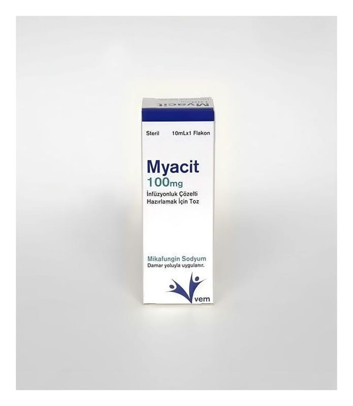

Myacit 100 mg İnfüzyonluk Çözelti Hazırlamak İçin Toz, 1 Adet

Ne için kullanılır
KT · Bölüm 1 MYACİT içinde dondurularak kurutulmuş, sıkıştırılmış beyaz toz bulunan flakonlarda sunulmaktadır. Her kutu güneşten gelen ultraviyole (UV) ışınlarından koruyucu bir koruyucu filmle sarılı bir adet flakon içermektedir.
MYACİT, mikafungin sodyum etken maddesini içerir. Her flakonda 100 mg mikafungin sodyum vardır. MYACİT, sulandırılarak çözelti haline getirilir. Çözelti hazırlandığında her ml’de 20 mg mikafungin sodyum bulunur. MYACİT, mantar hücrelerinin neden olduğu enfeksiyonları tedavi etmek için kullanılan bir ilaçtır. MYACİT, Candida olarak adlandırılan mantar veya maya hücrelerinin neden olduğu mantar enfeksiyonlarını tedavi etmek için kullanılır. MYACİT, sistemik enfeksiyon olarak adlandırılan vücudun içine bulaşmış mantar hücresi kaynaklı enfeksiyonları tedavi etmede etkilidir. Mantar hücresinin duvar yapısının bir kısmının üretimini engelleyerek etkisini gösterir. Mantarın yaşamaya ve çoğalmaya devam etmesi için hücre duvarının bozulmamış olması gerekmektedir. MYACİT, mantar hücre duvarında bozukluklara neden olarak, mantarın ölmesine neden olur ve çoğalmasını önler.
MYACİT, ─ Çocuklarda (yenidoğanlar dahil) ve yetişkinlerde ─ İnvazif kandidiyazis yani vücudun içine Candida adı verilen mantar hücresinin bulaşmasıyla oluşan ciddi mantar enfeksiyonunun tedavisinde, ─ Damardan verilen (intravenöz) tedavinin uygun olduğu durumlarda, yemek borusu dokusuna yerleşen mantar enfeksiyonu tedavisinde, ─ Aspergillus (küf) ve Candida (maya) adı verilen mantar türlerinin neden olduğu vücut içi mantar enfeksiyonlarına yakalanma riski olan kök hücre nakli alıcılarında veya 10 günden fazla kan hücrelerinden nötrofillerin 500 hücre/mikrolitre’den düşük olduğu kişilerde, ─ İnvazif aspergillozun yani Aspergillus (küf) adı verilen mantar türlerinin neden olduğu vücut içi ciddi mantar enfeksiyonlarının kurtarma tedavisinde veya invazif aspergilloz tedavisinde diğer mantar enfeksiyon tedavisinin tolere edilemediği durumlarda tek başına veya diğer mantar enfeksiyonunu tedavi eden başka bir ilaç ile birlikte kullanılır.
Bu ilaç sığır kaynaklı laktoz monohidrat yardımcı maddesini içerir.